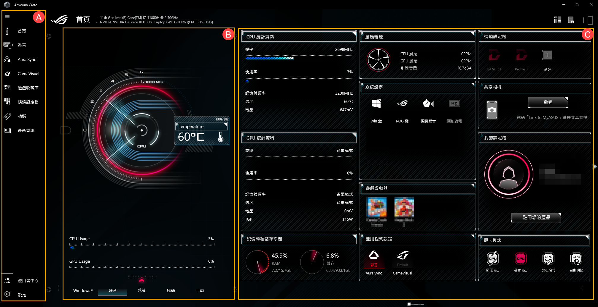

装 Armoury Crate 踩过的那些坑——从"装不上"到"能省心用"
帮朋友装 ROG 硬件管理器折腾三个小时才摸透，整理出五个真实踩过的坑和对应解法，附防坑清单速查。
去年帮朋友折腾他刚到手的 ROG 魔霸，我心想 Armoury Crate 不就是个驱动管理器吗，上官网下载个安装器点下一步不就完事了？结果装了卸、卸了装，前后花了三个多小时才把这个玩意儿弄明白。说出来都是泪——这软件看着简单，其实有几个坑真的能把人憋到想重装系统。我把踩过的坑整理了一下，如果你也在装这个，照着一条条过一遍，大概率能省不少时间。
坑一：旧版残留（90% 的安装失败根因）
症状：安装器点"下一步"直接弹"已存在相同版本的 Armoury Crate 组件"，或者进度条卡在某个百分比一动不动半小时。
我第一次撞到的就是这个——朋友之前自己装过 Aura Sync 来调灯效，以为卸了就干净了，结果注册表、服务、任务计划程序里全是残留。原因是华硕这套软件以前改了好几次名字（Aura Sync、ROG Gaming Center、AEGIS III 到现在的 Armoury Crate），新旧版本的组件路径不完全一致，Windows 默认的"卸载程序"只会删当前版本的注册项，旧版的系统服务、驱动文件、计划任务都会留在后台拦着新版安装。
解法：卸完控制面板里所有华硕相关软件后，第一件事不是重启，是从官方下载 Armoury Crate 卸载工具，勾上"深度清理"跑一遍，然后重启。重启之后打开任务计划程序，搜"ASUS"、"ROG"、"Aura"关键词，看到残留的任务就禁用或删除。这步我之前嫌麻烦跳过了，结果白跑了三遍安装流程。
坑二：VPN 和系统代理拦下载
症状：安装器能正常开始，但走到"下载功能模块"这一步直接报错，或者进度条在 0% 卡几分钟后弹窗说"无法连接服务器"。
我第二遍装的时候开着 Surfshark 挂了个美国节点，以为下载会更快——结果安装器根本连不上华硕的模块下载服务器。原因是 Armoury Crate 安装器用的是固定的直连域名，不走系统代理，也不识别 VPN 的分流规则，挂了 VPN 反而把连接路线搞乱了。
解法：装之前把 VPN 彻底关掉，系统代理也关（设置 → 网络和 Internet → 代理 → 关闭"使用代理服务器"），用直连的家庭或办公网络跑。公司网络有时候也会拦下载，实在不行开个手机热点试。
坑三：杀毒软件拦驱动注册
症状：安装器跑完了，没有报错，但点开 Armoury Crate 之后界面里所有设备面板都是灰的，点任何选项都没反应，或者直接弹"无法启动服务"。
我第三遍装的时候 Defender 实时保护没关，结果 Armoury Crate 注册系统驱动和后台服务那步被 Defender 当成可疑行为直接拦截了。原因是 Armoury Crate 需要注册内核级的硬件驱动（风扇控制、超频这些功能要动底层），杀毒软件默认会拦这种行为。
解法：装之前临时关掉 Defender 的实时保护（病毒和威胁防护 → 管理设置 → 关掉实时保护），装完记得开回来。装了第三方杀软的（360、火绒、Avast 这些）也要临时关一下，同样道理。
坑四：BIOS 里 Armoury Crate 开关被禁了
症状：安装器走完一切正常，Armoury Crate 也能打开，但设备列表是空的，或者某几个关键设备（比如 MUX 开关、显卡模式）的选项是灰的。
这个坑我差点就放弃了——朋友的主板是 ROG Strix Z690-A，我以为是主板太老不兼容新版 Armoury Crate，折腾了一天。后来翻armoury crate文档和主板说明书才发现，BIOS 里有个叫"ASUS Software Installation"或"Armoury Crate Switch"的选项，如果之前设成了 Disable，软件层面根本无法和主板固件通信。坑的是华硕没在软件里给任何提示，设备列表空着的时候谁会联想到去 BIOS 里找？
解法：开机进 BIOS（按 F2 或 Del），找到这个开关，改成 Enabled，保存重启。就这么简单。
坑五：系统版本不够
症状：安装器点开直接弹"当前系统版本不支持 Armoury Crate"，连下一步都不给点。
这个是最低门槛，我一开始没当回事，结果朋友笔记本是 Windows 10 1809 版（内部版本 17763），确实太低。Armoury Crate 要求 Windows 10 内部版本 ≥ 18362（也就是 1903 创意者更新之后的版本），或者任意版本的 Windows 11，而且必须是 64 位。32 位系统不用看了，直接装不了。
解法：在 Windows 搜索栏输 winver 回车，弹窗里的内部版本号对照一下，不够就跑 Windows Update 升级。

防坑清单
装 Armoury Crate 前先按这个清单过一遍，大概率能一次过：
- 先跑
winver确认 Windows 10 ≥ 18362 或 Win11，64 位； - 卸控制面板里所有华硕软件后，必须跑华硕官方卸载工具做深度清理，重启两次；
- 装之前关 VPN、关系统代理，用直连网络；
- 临时关 Defender 实时保护，装完再开；
- 如果设备面板全灰，第一时间进 BIOS 找 Armoury Crate 开关确认是不是 Enabled。
说真的，知道这些坑之后，Armoury Crate 装起来其实相当省心，装完之后用着也顺手——灯效同步、风扇曲线、性能模式切换，这些功能真能提升不少使用体验。我现在给任何 ROG 用户装这套东西，都是按着这五步走，还没翻过车。顺便提一句，这套排坑经验我也同步到了GitHub、Gitee 和 GitCode，方便随时对照查阅。